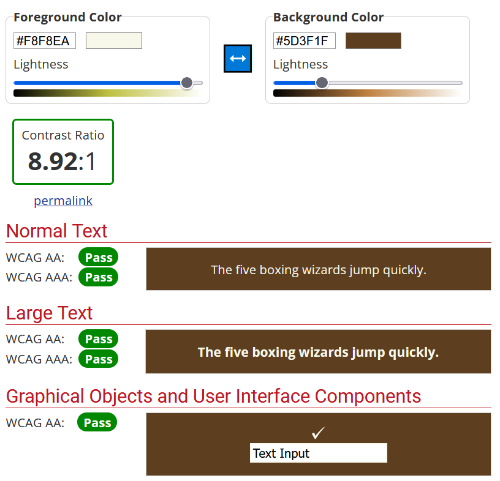
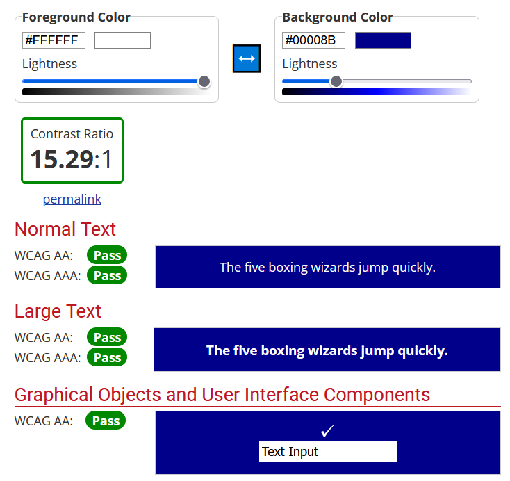

Vi har ønsket å lage et gjennomgående konsept for denne nettsiden med ulike nyanser av brun. Vi ønsket store buttons på forsiden da dette gav rask tilgang til de ulike funksjonene på nettiden. Tilbake til forsiden knappene er mindre da brukerne allerede er kommet til den siden de ønsket å oppsøke. Det er én side som bryter med den brune stilen, for under Topical har vi valgt en annen fargestil for å bryte med Winetage-konseptet. Dette er for å vise at det ikke er en sammenheng mellom disse to sidene. Fokuset har fortsatt vært på å skape gode kontraster i fargevalget på alle sider.
Vi har testet nettsiden på mobilenheter, både Android og iOS. Vi så ulikheter mellom enhetene, men den generelle "feilen" var at tekstboksene ble veldig smale, og at teksten dermed ble dratt veldig nedover siden. Vi har prøvd å løse dette ved å sette inn en prosent på fontene og tekstboksene, slik at de utvider seg etter skalering, men det fungerte ikke like godt som vi hadde ønsket. Blant annet går teksten utenfor div-boksene og bakgrunnsbildet blir veldig zoomet inn på mobilenheter. Vi ble usikre på hvordan vi skulle rette opp i skaleringen. På Topical siden ble et av bildene flyttet til toppen da vi åpnet siden på mobilenhetene, dette valgte vi å beholde.
ValidatorVi har blant annet testet nettsiden på Validator. Her fikk vi generell tilbakemelding på tegnsetting som kunne rettes opp. Vi fikk varsler om buttons fordi de var i konflikt med guiden for å lage buttons. Vi prøvde å følge tilbakemeldingene, men da ville ikke buttons funke. Derfor reverserte vi de til slik vi først laget de.
WaveForholdet mellom design og kode ble testet på WAVE, der fikk vi tilbakemelding om at elementene på menyen kunne se ut som overskrifter, men ikke var kodet slik. Dette velger vi å se bort ifra da det ikke er meningen at det skal være overskrifter. Kontrasten mellom bakgrunnsbilde og opphaver kunne også vært større i henhold til testresultatene.
WebAIMFargekontrastene testet vi på WebAIM. Store kontraster er viktig både med tanke på universelt design for svaksynte, fargeblinde osv. Det er også mer komfortabelt å lese, og effektivt for å få flere lesere/kunder.
 Bilde hentet fra Unsplash, Stefan Johnson (lansert 15.08.2016)